Hello everyone!
Just had a quick question if anyone were familiar with this?
If you have seen this thread Display .PPM files in RPG then this question will make more sense.
So from this script I get 3 values; R, G, and B.
But I want to use these values to get their single corresponding value for 4bits.
Is there some math algorithm for this?
Convert R G B values into single 0 - 255 color value?
Moderator: DosItHelp
-
IcarusLives
- Posts: 92
- Joined: 17 Jan 2016 23:55
-
IcarusLives
- Posts: 92
- Joined: 17 Jan 2016 23:55
Re: Convert R G B values into single 0 - 255 color value?
SOLVED:IcarusLives wrote: ↑12 Apr 2018 19:08Hello everyone!
Just had a quick question if anyone were familiar with this?
If you have seen this thread Display .PPM files in RPG then this question will make more sense.
So from this script I get 3 values; R, G, and B.
But I want to use these values to get their single corresponding value for 4bits.
Is there some math algorithm for this?
This line seems to suffice quite nicely.
Code: Select all
set /a "RGB_to_VALUE=(r * 6 / 256) * 36 + (g * 6 / 256) * 6 + (b * 6 / 256) + 16"Re: Convert R G B values into single 0 - 255 color value?
I am afraid I don't understand which bits should be taken from R, G and B variables in order to produce an 8 bits value. However, this formula directly takes 2 bits from R and 3 bits from G, B and joins them in a single 8-bits value:
That is:
Antonio
Code: Select all
set /A "RGB_to_VALUE=(r & 3) << 6 | (g & 7) << 3 | (b & 7)"
Code: Select all
bits in VALUE: 7,6 5,4,3 2,1,0
RGB_to_VALUE = bits 1,0 from R + bits 2,1,0 from G + bits 2,1,0 from B
-
IcarusLives
- Posts: 92
- Joined: 17 Jan 2016 23:55
Re: Convert R G B values into single 0 - 255 color value?
Hey Antonio! Thank you for your efforts!
To my understanding it should be
RRR GGG BB
instead of
RR GGG BBB
I made a 100x25 image of clouds in the sky. Lets call its a layer strip for parallax background.
Your algorithm gave me a distorted output
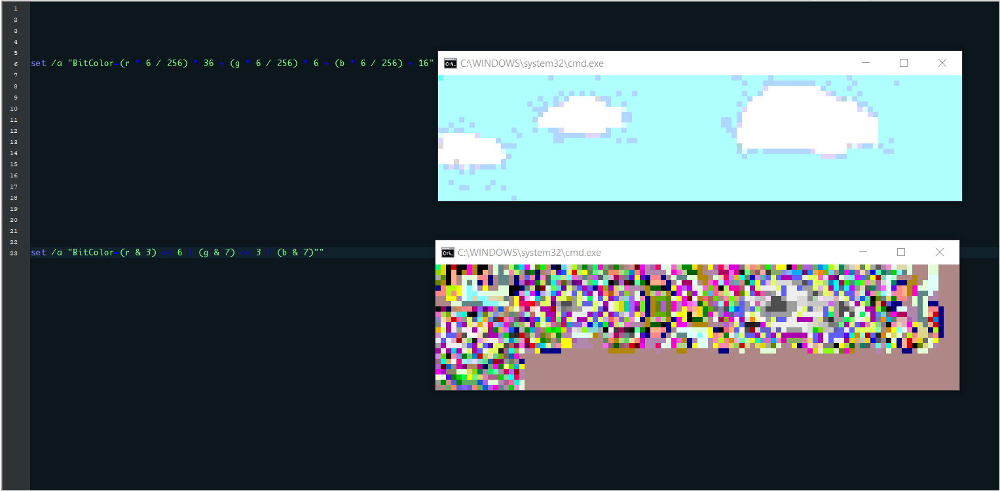
To my understanding it should be
RRR GGG BB
instead of
RR GGG BBB
I made a 100x25 image of clouds in the sky. Lets call its a layer strip for parallax background.
Your algorithm gave me a distorted output
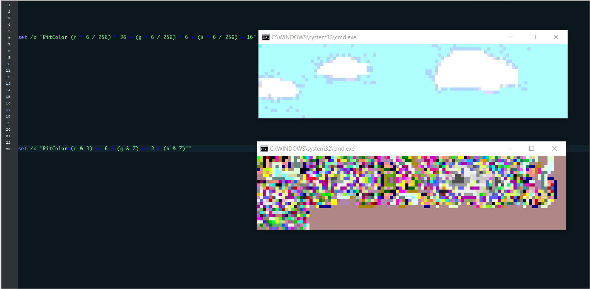
Re: Convert R G B values into single 0 - 255 color value?
As I said, I didn't knew which bits should be used. This formula uses RRR GGG BB:IcarusLives wrote: ↑13 Apr 2018 07:20Hey Antonio! Thank you for your efforts!
To my understanding it should be
RRR GGG BB
instead of
RR GGG BBB
Code: Select all
set /A "RGB_to_VALUE=(r & 7) << 5 | (g & 7) << 2 | (b & 3)"
Re: Convert R G B values into single 0 - 255 color value?
If you are using the least significant bits of the colorchannels, then you are folding the order of colors.
You better should use the most significant bits:
Assumed that r, g, b in [0:255], i think you better should use the following for your example:
penpen
You better should use the most significant bits:
Code: Select all
:: example bit (hex) representation (2msbs = using the two most significant bits, 2lsbs = using the two least significant bits)
2msbs 2lsbs
0000(0) 0000(0) 0000(0)
0001(1) 0000(0) 0001(1)
0010(2) 0000(0) 0010(2)
0011(3) 0000(0) 0011(3)
0100(4) 0100(1) 0000(0)
0101(5) 0100(1) 0001(1)
0110(6) 0100(1) 0010(2)
0111(7) 0100(1) 0011(3)
1000(8) 1000(2) 0000(0)
1001(9) 1000(2) 0001(1)
1010(A) 1000(2) 0010(2)
1011(B) 1000(2) 0011(3)
1100(C) 1100(3) 0000(0)
1101(D) 1100(3) 0001(1)
1110(E) 1100(3) 0010(2)
1111(F) 1100(3) 0011(3)
Code: Select all
set /A "RGB_to_VALUE=(r & 0xC0) | ((g & 0xE0) >> 2) | ((b & 0xE0) >> 5)"penpen
Re: Convert R G B values into single 0 - 255 color value?
I think the best option is to proportionally scale the R G B values as IcarusLives shows. Plus his formula properly maps to color values 16-131, skipping the 4 bit standard colors from 0-15, and the gray scale and some others from 132-255.
-
IcarusLives
- Posts: 92
- Joined: 17 Jan 2016 23:55
Re: Convert R G B values into single 0 - 255 color value?
I'm afraid that, while Penpen has made it close, it's not quite right.
Penpen
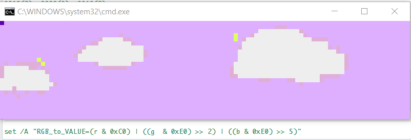
Aacini
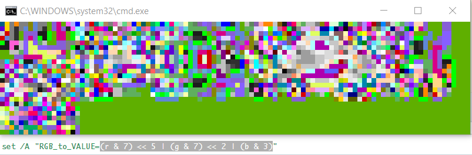
I suppose the line I have above works quite nicely for what I'm doing, so I guess I'll just stick with that
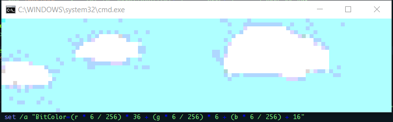
Penpen
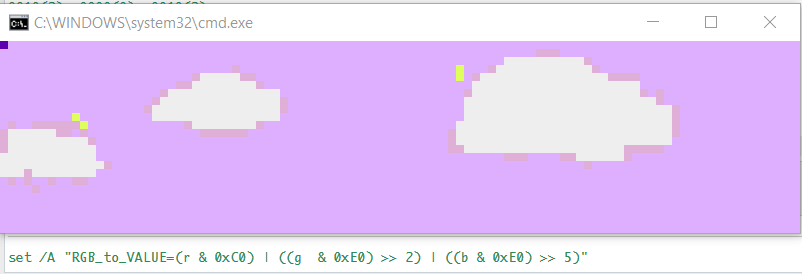
Aacini
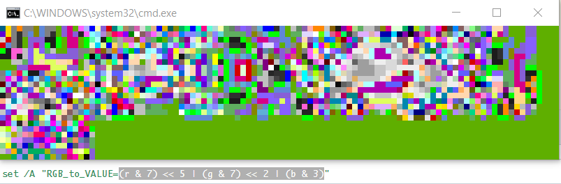
I suppose the line I have above works quite nicely for what I'm doing, so I guess I'll just stick with that
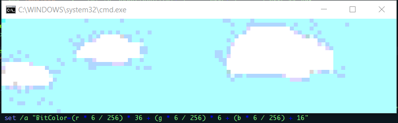
Re: Convert R G B values into single 0 - 255 color value?
Argh...  I made the same error, that Antonia has made:
I made the same error, that Antonia has made:
I used RRGGGBBB instead of RRRGGGBB.
I apologize; sorry!
Here are all variations:
When only 256 values are available to code colors, usually you should better use a color look-up table of clustered colors.
penpen
I used RRGGGBBB instead of RRRGGGBB.
I apologize; sorry!
Here are all variations:
Code: Select all
:: RRRGGGBB
set /A "RGB_to_VALUE=(r & 0xE0) | ((g & 0xE0) >> 3) | ((b & 0xC0) >> 6)"
:: RRRGGBBB
set /A "RGB_to_VALUE=(r & 0xE0) | ((g & 0xC0) >> 3) | ((b & 0xE0) >> 5)"
:: RRGGGBBB
set /A "RGB_to_VALUE=(r & 0xC0) | ((g & 0xE0) >> 2) | ((b & 0xE0) >> 5)"
I still don't get for what usecase such compressed colorchannel values are needed, so i don't know if that's really the best option:
When only 256 values are available to code colors, usually you should better use a color look-up table of clustered colors.
penpen
-
IcarusLives
- Posts: 92
- Joined: 17 Jan 2016 23:55
Re: Convert R G B values into single 0 - 255 color value?
It seems that these are also incorrect, though still somewhat close!penpen wrote: ↑14 Apr 2018 09:20Argh...
I used RRGGGBBB instead of RRRGGGBB.
I apologize; sorry!
Here are all variations:penpenCode: Select all
:: RRRGGGBB set /A "RGB_to_VALUE=(r & 0xE0) | ((g & 0xE0) >> 3) | ((b & 0xC0) >> 6)" :: RRRGGBBB set /A "RGB_to_VALUE=(r & 0xE0) | ((g & 0xC0) >> 3) | ((b & 0xE0) >> 5)" :: RRGGGBBB set /A "RGB_to_VALUE=(r & 0xC0) | ((g & 0xE0) >> 2) | ((b & 0xE0) >> 5)"
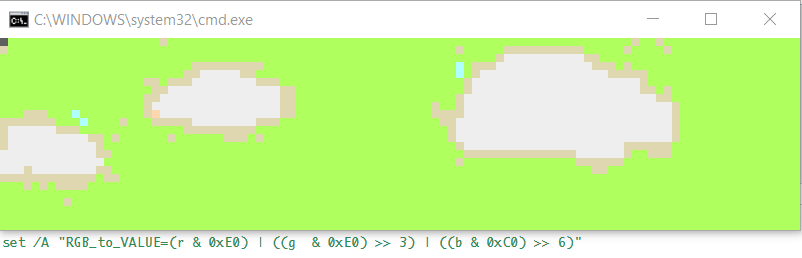
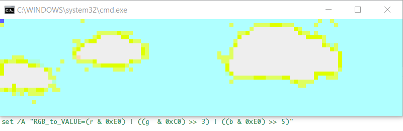
So far it remains that this algorithm is the most accurate.
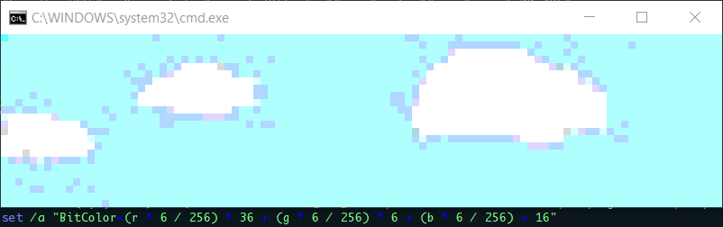
Re: Convert R G B values into single 0 - 255 color value?
As mentioned before (but not explicitely addressed to you):
Why do you need such compressed colors (or better for what do you need such colors), and
why don't you use a look-up table of clustered colors?
penpen
Why do you need such compressed colors (or better for what do you need such colors), and
why don't you use a look-up table of clustered colors?
penpen
-
IcarusLives
- Posts: 92
- Joined: 17 Jan 2016 23:55
Re: Convert R G B values into single 0 - 255 color value?
I need these compressed colors for the sake of simplicity.
Properly compressing them to their most accurate coorespondant 0-255 is more or less, dithering/lower resolution. (Less colors so all shades of yellow for example are just yellow.
I am collecting the output of these vt100 sequences as parallax strip for an arcade style game I've been working on.
I have mentioned in OP a thread using the RGB values which are obtained through hex, so I have the r g b values already, I would just like to properly compress them for simple future use.
Re: Convert R G B values into single 0 - 255 color value?
I think you know that, but to clearify for other readers:IcarusLives wrote: ↑14 Apr 2018 10:54Properly compressing them to their most accurate coorespondant 0-255 is more or less, dithering/lower resolution.
Reducing color depth (in this case by compressing the color values) is not dithering, as this happens in color space only.
Dithering could be used to hide a color depth reduction, and should happen in image space only.
I'm unsure if you might have misunderstood my above post, or if i might have misunderstood you:IcarusLives wrote: ↑14 Apr 2018 10:54I have mentioned in OP a thread using the RGB values which are obtained through hex, so I have the r g b values already, I would just like to properly compress them for simple future use.
I still don't get why you don't use look-up table of clustered colors.
I don't suggest to use a look-up table of clustered pixels (to perform dithering or similar).
Or in other words, i suggest to create a "cloud" of all used colors as the initial cluster set and merge nearest clusters in color space (for example in RGB), until you have 256 or fewer clusters left (dependig on which additional side conditions you want to fulfill: "Less colors so all shades of yellow for example are just yellow."). Then you could replace all colors within a cluster with the center of mass of all color points within these clusters (which in colorspace is also a color).
You need a color table (array of a maximum of 256 color values) to properly restore the color information in your images, but this could be precomputed, so you don't have to do that on the fly when executing your final program; The color value v in [0:255] just represents the color "colortable[v]".
At least this method cannot be less accurate than your above method, because in worst case you would get your compressed colors.
Sidenote i would do that preprosseing in C++/Java and would use the L*a*b* color space to compute the color distances, as this is the easiest color space that roughly matches the human color sentiency.
penpen
-
IcarusLives
- Posts: 92
- Joined: 17 Jan 2016 23:55
Re: Convert R G B values into single 0 - 255 color value?
How should I go about implementing a precomputed table of colors?
This is all entirely new to me, but I'm really trying to understand. Sorry if it seems I'm failing to see the obvious..
This is all entirely new to me, but I'm really trying to understand. Sorry if it seems I'm failing to see the obvious..
Re: Convert R G B values into single 0 - 255 color value?
Hi,
I played a bit with your code.
I tried to optimize the display function, I precompute all escape sequences before the display function is called.
I used the tip of Dave to use certutil.
This should be fast enough for a game.
Only the RGB-converting time is slow (takes 7seconds on my pc)
Now the functions take arguments for the ppm file and for the output picture array.
I played a bit with your code.
I tried to optimize the display function, I precompute all escape sequences before the display function is called.
I used the tip of Dave to use certutil.
This should be fast enough for a game.
Only the RGB-converting time is slow (takes 7seconds on my pc)
Now the functions take arguments for the ppm file and for the output picture array.
Code: Select all
@echo off & setlocal enableDelayedExpansion
REM INIT
for /F %%a in ('echo prompt $E^| cmd') do set "ESC=%%a"
REM *** bytesPerLine must be a multiple of 6, and bytesPerLine*20 must be less then 8191
set bytesPerLine=402
REM *** Clear Screen
<nul set /p ".=%ESC%[2J"
set t1=!time!
call :readImage "pinkFloyd.ppm"
set t2=!time!
call :RGB24bitTo8bit pinkFloyd
set t3=!time!
REM *** Draw the image and move the start line between 0 to 6
set "dir=1"
set /a "offset=0"
for /L %%n in (1 1 100) do (
if defined dir (
set /a offset+=1
if !offset! GEQ 6 (
set "dir="
)
) else (
set /a offset-=1
if !offset! EQU 0 (
set "dir=1"
)
)
call :display pinkFloyd !offset!
)
echo(
echo time1=!t1!
echo time2=!t2!
echo time3=!t3!
echo time4=!time!
exit /b
:readImage
REM Parse height and width from PPM, and obtain headerSize
set "image=%~1"
for %%a in (%image%) do set "imageFileSize=%%~za"
if exist %image% ( if /i "%image:~-3%" equ "ppm" ( for /f "tokens=*" %%a in (%image%) do (
set "str=X%%~a" & set "length=0"
for /l %%b in (5,-1,0) do ( set /a "length|=1<<%%b"
for /f "tokens=*" %%c in ("!length!") do if "!str:~%%c,1!" equ "" set /a "length&=~1<<%%b" )
set /a "headerSize+=length + 1"
if !i! equ 1 for /f "tokens=1,2" %%b in ("%%a") do ( set "o=%%b"
if "!o:~0,1!" neq "#" set /a "width=%%b", "height=%%c" )
if !i! equ 2 goto :break
set /a "i+=1"
)) else ( echo Format not supported & timeout /t 2 > nul & exit )
) else ( echo File not found & timeout /t 2 > nul & exit )
:break
REM Parse all data from %image% and collect in hex[] up to <maxChars> characters (divisible by 6)
mode %width%,%height%
set /a height+=10
REM *** Set window dimension to height * width
<nul set /p ".=%ESC%[8;%height%;%width%t"
certutil -f -encodehex %image% ppm.hex.tmp > nul
set /a hex_max=0
set /a headerSize=headerSize*2 %= ignore this amount of hex values =%
set /a maxChars=bytesPerLine*2
for /f "tokens=1,*" %%a in (ppm.hex.tmp) do (
set "line=%%b"
set "line=!line:~0,48!"
set "hex=!hex!!line: =!"
if defined headerSize (
if "!hex:~%headerSize%,1!" NEQ "" (
set "hex=!hex:~%headerSize%!"
set "headerSize="
)
)
if "!hex:~%maxChars%,1!" NEQ "" (
set "hex[!hex_max!]=!hex:~0,%maxChars%!"
set /a hex_max+=1
set "hex=!hex:~%maxChars%!"
)
<nul set /p ".=%ESC%[HLoading (!hex_max!)"
)
if "!hex!" == "" (
set /a hex_max-=1
) ELSE (
set "hex[!hex_max!]=!hex:~0,990!"
)
exit /b
REM *** Build the out[] array with color escape sequences for every pixel
:RGB24bitTo8bit <pictureName>
echo(
set /a maxCount=bytesPerLine*2-6
for /L %%a in (0,1,%hex_max%) do (
<nul set /p ".=%ESC%7Converting RGB (%%a)%ESC%8" %= Save/restore cursor position =%
set "out="
for /L %%b in (0,6,%maxCount%) do (
set "c=!hex[%%a]:~%%b,6!"
if defined c (
set /a "r=0x!c:~0,2!", "g=0x!c:~2,2!", "b=0x!c:~4,2!"
set "out=!out!#!r!;!g!;!b!m "
)
)
set "%1[%%a]=!out!"
)
exit /b
:display <pictureName> <offset>
REM *** Hide cursor, Set cursor to line %1
<nul set /p ".=%ESC%[?25l%ESC%[%2H"
for /L %%a in (0,1,%hex_max%) do (
<nul set /p ".=!%1[%%a]:#=%ESC%[48;2;!"
)
REM *** Show cursor, Reset color to default
<nul set /p ".=%ESC%[?25h%ESC%[0m"
exit /b